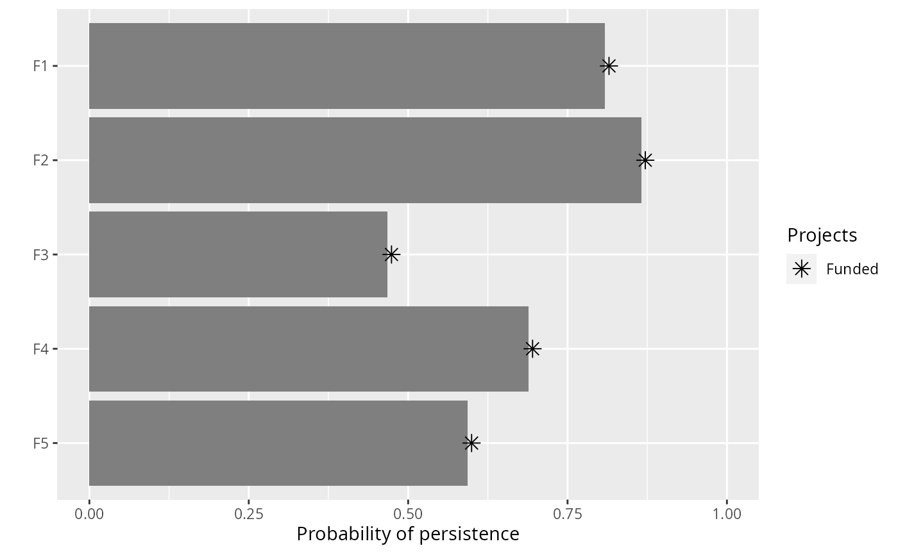
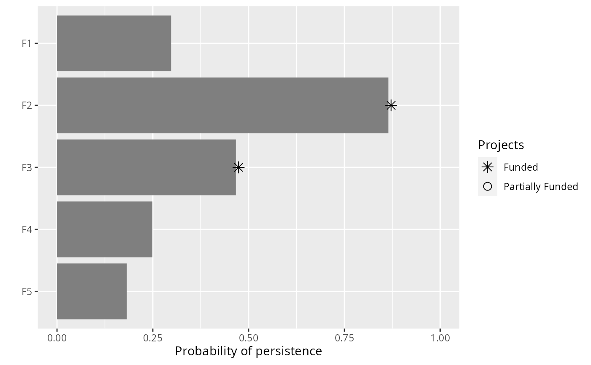

Targets are used to specify the minimum probability of persistence required for each feature. Please note that only some objectives require targets, and attempting to solve a problem that requires targets will throw an error if targets are not supplied, and attempting to solve a problem that does not require targets will throw a warning if targets are supplied.
The following functions can be used to specify targets for a
project prioritization problem():
add_relative_targets()Set targets as a proportion (between 0 and 1) of the maximum probability
of persistence associated with the best project for each feature. For
instance, if the best project for a feature has an 80% probability of
persisting, setting a 50% (i.e. 0.5) relative target will
correspond to a 40% threshold probability of persisting.
add_absolute_targets()Set targets by specifying exactly what probability of persistence is
required for each feature. For instance, setting an absolute target of
10% (i.e. 0.1) corresponds to a threshold 10% probability of
persisting.
add_manual_targets()Set targets by manually specifying all the required information for each target.
# load data data(sim_projects, sim_features, sim_actions) # build problem with minimum set objective and targets that require each # feature to have a 30% chance of persisting into the future p1 <- problem(sim_projects, sim_actions, sim_features, "name", "success", "name", "cost", "name") %>% add_min_set_objective() %>% add_absolute_targets(0.3) %>% add_binary_decisions() # print problem print(p1)#> #> #> #> #> #> #> #> #> #> #> #># build problem with minimum set objective and targets that require each # feature to have a level of persistence that is greater than or equal to # 30% of the best project for conserving it p2 <- problem(sim_projects, sim_actions, sim_features, "name", "success", "name", "cost", "name") %>% add_min_set_objective() %>% add_relative_targets(0.3) %>% add_binary_decisions() # print problem print(p2)#> #> #> #> #> #> #> #> #> #> #> #>#> Gurobi Optimizer version 9.0.2 build v9.0.2rc0 (linux64) #> Optimize a model with 46 rows, 42 columns and 92 nonzeros #> Model fingerprint: 0xde05e947 #> Variable types: 0 continuous, 42 integer (42 binary) #> Coefficient statistics: #> Matrix range [9e-02, 1e+00] #> Objective range [9e+01, 1e+02] #> Bounds range [1e+00, 1e+00] #> RHS range [3e-01, 1e+00] #> Found heuristic solution: objective 497.7671458 #> Presolve removed 45 rows and 20 columns #> Presolve time: 0.00s #> Presolved: 1 rows, 22 columns, 2 nonzeros #> Variable types: 0 continuous, 22 integer (22 binary) #> #> Explored 0 nodes (0 simplex iterations) in 0.00 seconds #> Thread count was 1 (of 4 available processors) #> #> Solution count 1: 497.767 #> #> Optimal solution found (tolerance 0.00e+00) #> Best objective 4.977671458279e+02, best bound 4.977671458279e+02, gap 0.0000%#> Gurobi Optimizer version 9.0.2 build v9.0.2rc0 (linux64) #> Optimize a model with 46 rows, 42 columns and 92 nonzeros #> Model fingerprint: 0xb55f4224 #> Variable types: 0 continuous, 42 integer (42 binary) #> Coefficient statistics: #> Matrix range [9e-02, 1e+00] #> Objective range [9e+01, 1e+02] #> Bounds range [1e+00, 1e+00] #> RHS range [1e-01, 1e+00] #> Found heuristic solution: objective 304.1251127 #> Presolve removed 24 rows and 11 columns #> Presolve time: 0.00s #> Presolved: 22 rows, 31 columns, 44 nonzeros #> Variable types: 0 continuous, 31 integer (31 binary) #> Presolved: 22 rows, 31 columns, 44 nonzeros #> #> #> Root relaxation: objective 2.042172e+02, 5 iterations, 0.00 seconds #> #> Nodes | Current Node | Objective Bounds | Work #> Expl Unexpl | Obj Depth IntInf | Incumbent BestBd Gap | It/Node Time #> #> * 0 0 0 204.2171997 204.21720 0.00% - 0s #> #> Explored 0 nodes (5 simplex iterations) in 0.00 seconds #> Thread count was 1 (of 4 available processors) #> #> Solution count 1: 204.217 #> #> Optimal solution found (tolerance 0.00e+00) #> Best objective 2.042171996644e+02, best bound 2.042171996644e+02, gap 0.0000%#> # A tibble: 1 x 21 #> solution status obj cost F1_action F2_action F3_action F4_action F5_action #> <int> <chr> <dbl> <dbl> <dbl> <dbl> <dbl> <dbl> <dbl> #> 1 1 OPTIM~ 498. 498. 1 1 1 1 1 #> # ... with 12 more variables: baseline_action <dbl>, F1_project <dbl>, #> # F2_project <dbl>, F3_project <dbl>, F4_project <dbl>, F5_project <dbl>, #> # baseline_project <dbl>, F1 <dbl>, F2 <dbl>, F3 <dbl>, F4 <dbl>, F5 <dbl>print(s2)#> # A tibble: 1 x 21 #> solution status obj cost F1_action F2_action F3_action F4_action F5_action #> <int> <chr> <dbl> <dbl> <dbl> <dbl> <dbl> <dbl> <dbl> #> 1 1 OPTIM~ 204. 204. 0 1 1 0 0 #> # ... with 12 more variables: baseline_action <dbl>, F1_project <dbl>, #> # F2_project <dbl>, F3_project <dbl>, F4_project <dbl>, F5_project <dbl>, #> # baseline_project <dbl>, F1 <dbl>, F2 <dbl>, F3 <dbl>, F4 <dbl>, F5 <dbl># }